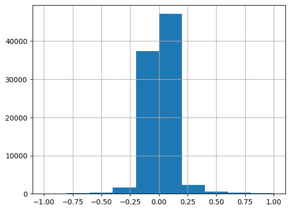
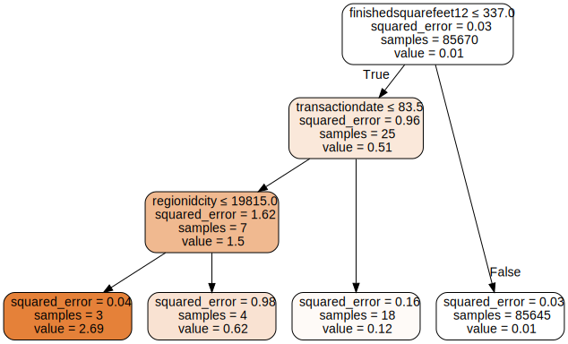
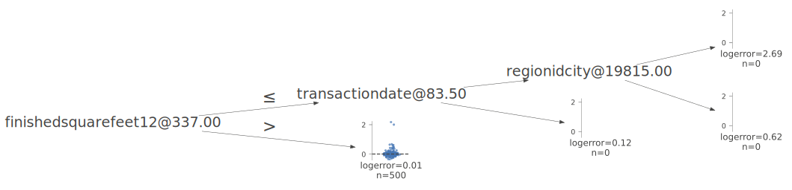

!pip install dtreeviz
!pip install treeinterpreter
!pip install waterfallcharts
from pandas.api.types import is_string_dtype, is_numeric_dtype, is_categorical_dtype
from fastai.tabular.all import *
from sklearn.ensemble import RandomForestRegressor
from sklearn.tree import DecisionTreeRegressor
from dtreeviz.trees import *
from IPython.display import Image, display_svg, SVG
pd.options.display.max_rows = 20
pd.options.display.max_columns = 8
from sklearn.tree import DecisionTreeClassifier, export_graphviz
import graphviz
def draw_tree(t, df, size=10, ratio=0.6, precision=2, **kwargs):
s=export_graphviz(t, out_file=None, feature_names=df.columns, filled=True, rounded=True,
special_characters=True, rotate=False, precision=precision, **kwargs)
return graphviz.Source(re.sub('Tree {', f'Tree {{ size={size}; ratio={ratio}', s))
import dtreeviz
from fastcore.all import *Building a Random Forest for the Kaggle Zillow Competition Dataset
deep learning
python
In this notebook I follow the techniques presented in the fastai textbook to train a leaderboard-beating random forest.
Background
In this blog post I’ll work through the first exercise given in the “Further Research” section of Chapter 9 of the fastai textbook:
Pick a competition on Kaggle with tabular data (current or past) and try to adapt the techniques seen in this chapter to get the best possible results. Compare your results to the private leaderboard.
I’ll use the dataset from the Zillow Prize: Zillow’s Home Value Prediction (Zestimate) competition, and work through each section in the chapter.
In this competition, Zillow is asking you to predict the log-error between their Zestimate and the actual sale price, given all the features of a home. The log error is defined as \(logerror = log(Zestimate)-log(SalePrice)\). Submissions are evaluated on Mean Absolute Error between the predicted log error and the actual log error.
I get the following results by the end of the exercise:
| Model | Mean Absolute Error |
|---|---|
| Random Forest | 0.072 |
| Neural Net | 0.117 |
| Ensemble of both | 0.086 |
The first place entry on the private leaderboard had an error of 0.074.
Load the Data
from pathlib import Path
cred_path = Path("~/.kaggle/kaggle.json").expanduser()
if not cred_path.exists():
cred_path.parent.mkdir(exist_ok=True)
cred_path.write_text(creds)
cred_path.chmod(0o600)import zipfile,kaggle
path = Path('zillow-prize-1')
if not path.exists():
kaggle.api.competition_download_cli(str(path))
zipfile.ZipFile(f'{path}.zip').extractall(path)Downloading zillow-prize-1.zip to /content100%|██████████| 340M/340M [00:04<00:00, 84.9MB/s]path.ls(file_type='text')(#5) [Path('zillow-prize-1/train_2017.csv'),Path('zillow-prize-1/sample_submission.csv'),Path('zillow-prize-1/train_2016_v2.csv'),Path('zillow-prize-1/properties_2016.csv'),Path('zillow-prize-1/properties_2017.csv')]properties_2016 = pd.read_csv(path/'properties_2016.csv', low_memory=False)
df = pd.read_csv(path/'train_2016_v2.csv', low_memory=False)df.shape(90275, 3)df = df.merge(properties_2016, how='left', left_on='parcelid', right_on='parcelid')df.shape(90275, 60)df.head()| parcelid | logerror | transactiondate | airconditioningtypeid | ... | taxamount | taxdelinquencyflag | taxdelinquencyyear | censustractandblock | |
|---|---|---|---|---|---|---|---|---|---|
| 0 | 11016594 | 0.0276 | 2016-01-01 | 1.0 | ... | 6735.88 | NaN | NaN | 6.037107e+13 |
| 1 | 14366692 | -0.1684 | 2016-01-01 | NaN | ... | 10153.02 | NaN | NaN | NaN |
| 2 | 12098116 | -0.0040 | 2016-01-01 | 1.0 | ... | 11484.48 | NaN | NaN | 6.037464e+13 |
| 3 | 12643413 | 0.0218 | 2016-01-02 | 1.0 | ... | 3048.74 | NaN | NaN | 6.037296e+13 |
| 4 | 14432541 | -0.0050 | 2016-01-02 | NaN | ... | 5488.96 | NaN | NaN | 6.059042e+13 |
5 rows × 60 columns
Currently I’m mainly looking for situations where parcelid is NA since that would indicate an issue in my merge. Looks like all parcelids are accounted for:
df.isna().sum()parcelid 0
logerror 0
transactiondate 0
airconditioningtypeid 61494
architecturalstyletypeid 90014
...
landtaxvaluedollarcnt 1
taxamount 6
taxdelinquencyflag 88492
taxdelinquencyyear 88492
censustractandblock 605
Length: 60, dtype: int64The dependent variable is logerror. Most of the logerror values are between +/- 0.25.
df.logerror.hist(range=[-1, 1]);
The competition’s data page doesn’t highlight any particular columns, so I’ll take a look at a few of them:
df.columnsIndex(['parcelid', 'logerror', 'transactiondate', 'airconditioningtypeid',
'architecturalstyletypeid', 'basementsqft', 'bathroomcnt', 'bedroomcnt',
'buildingclasstypeid', 'buildingqualitytypeid', 'calculatedbathnbr',
'decktypeid', 'finishedfloor1squarefeet',
'calculatedfinishedsquarefeet', 'finishedsquarefeet12',
'finishedsquarefeet13', 'finishedsquarefeet15', 'finishedsquarefeet50',
'finishedsquarefeet6', 'fips', 'fireplacecnt', 'fullbathcnt',
'garagecarcnt', 'garagetotalsqft', 'hashottuborspa',
'heatingorsystemtypeid', 'latitude', 'longitude', 'lotsizesquarefeet',
'poolcnt', 'poolsizesum', 'pooltypeid10', 'pooltypeid2', 'pooltypeid7',
'propertycountylandusecode', 'propertylandusetypeid',
'propertyzoningdesc', 'rawcensustractandblock', 'regionidcity',
'regionidcounty', 'regionidneighborhood', 'regionidzip', 'roomcnt',
'storytypeid', 'threequarterbathnbr', 'typeconstructiontypeid',
'unitcnt', 'yardbuildingsqft17', 'yardbuildingsqft26', 'yearbuilt',
'numberofstories', 'fireplaceflag', 'structuretaxvaluedollarcnt',
'taxvaluedollarcnt', 'assessmentyear', 'landtaxvaluedollarcnt',
'taxamount', 'taxdelinquencyflag', 'taxdelinquencyyear',
'censustractandblock'],
dtype='object')df.calculatedfinishedsquarefeet.hist(range=[0,7500]);df.bedroomcnt.hist(range=[0,6]);df.yearbuilt.hist();Data Cleaning
Handle Ordinal Columns
I’m not displaying the output here, but I looped through all of the columns and looked at their unique values to see if there were opportunities to set ordinal values—I did not find any.
for col in df.columns:
print(col, df[col].unique(), len(df[col].unique()))
print(" ")Handle Dates
The only date field is transactiondate which is currently stored in the DataFrame as a str. I’ll convert it to a datetime object.
type(df.transactiondate[0])strdf['transactiondate'] = pd.to_datetime(df['transactiondate'])df.transactiondate[0], type(df.transactiondate[0])(Timestamp('2016-01-01 00:00:00'), pandas._libs.tslibs.timestamps.Timestamp)I’ll use the fastai add_datepart function to add additional columns associated with the transactiondate. I want to keep transactiondate field intact to make it easier to split the training and validation sets.
len(df.columns)60transactiondate = df['transactiondate']
df = add_datepart(df, 'transactiondate')len(df.columns)72' '.join(o for o in df.columns if o.startswith('transaction'))'transactionYear transactionMonth transactionWeek transactionDay transactionDayofweek transactionDayofyear transactionIs_month_end transactionIs_month_start transactionIs_quarter_end transactionIs_quarter_start transactionIs_year_end transactionIs_year_start transactionElapsed'df['transactiondate'] = transactiondateDefine the Training and Validation Sets
The data page of the competition states that the training data contains transactions mostly before 10/15/2016, whereas the test data contains transactions between 10/15/2016 and 12/31/2016. I’ll use the same split for my data.
There are 85670 records before October 15, 2016, and 4605 records on or after. These will become the training and validation sets, respectively.
len(df[df['transactiondate'] < '2016-10-15'])85670df[df['transactiondate'] < '2016-10-15'].transactiondate.hist();len(df[df['transactiondate'] >= '2016-10-15'])4605df[df['transactiondate'] >= '2016-10-15'].transactiondate.hist();dep_var = 'logerror'cond = df.transactiondate < '2016-10-15'
train_idx = np.where( cond)[0]
valid_idx = np.where(~cond)[0]
splits = (list(train_idx), list(valid_idx))len(train_idx), len(valid_idx)(85670, 4605)Create the Decision Tree
I’ll setup the TabularPandas object first, as done in the text:
procs = [Categorify, FillMissing]cont,cat = cont_cat_split(df, 1, dep_var=dep_var)cat['hashottuborspa',
'propertycountylandusecode',
'propertyzoningdesc',
'fireplaceflag',
'taxdelinquencyflag',
'transactionYear',
'transactionIs_month_end',
'transactionIs_month_start',
'transactionIs_quarter_end',
'transactionIs_quarter_start',
'transactionIs_year_end',
'transactionIs_year_start',
'transactiondate']to = TabularPandas(df, procs, cat, cont, y_names=dep_var, splits=splits)type(to)fastai.tabular.core.TabularPandaslen(to.train), len(to.valid)(85670, 4605)to.show(3)| hashottuborspa | propertycountylandusecode | propertyzoningdesc | fireplaceflag | taxdelinquencyflag | transactionYear | transactionIs_month_end | transactionIs_month_start | transactionIs_quarter_end | transactionIs_quarter_start | transactionIs_year_end | transactionIs_year_start | transactiondate | airconditioningtypeid_na | architecturalstyletypeid_na | basementsqft_na | buildingclasstypeid_na | buildingqualitytypeid_na | calculatedbathnbr_na | decktypeid_na | finishedfloor1squarefeet_na | calculatedfinishedsquarefeet_na | finishedsquarefeet12_na | finishedsquarefeet13_na | finishedsquarefeet15_na | finishedsquarefeet50_na | finishedsquarefeet6_na | fireplacecnt_na | fullbathcnt_na | garagecarcnt_na | garagetotalsqft_na | heatingorsystemtypeid_na | lotsizesquarefeet_na | poolcnt_na | poolsizesum_na | pooltypeid10_na | pooltypeid2_na | pooltypeid7_na | regionidcity_na | regionidneighborhood_na | regionidzip_na | storytypeid_na | threequarterbathnbr_na | typeconstructiontypeid_na | unitcnt_na | yardbuildingsqft17_na | yardbuildingsqft26_na | yearbuilt_na | numberofstories_na | structuretaxvaluedollarcnt_na | taxvaluedollarcnt_na | landtaxvaluedollarcnt_na | taxamount_na | taxdelinquencyyear_na | censustractandblock_na | parcelid | airconditioningtypeid | architecturalstyletypeid | basementsqft | bathroomcnt | bedroomcnt | buildingclasstypeid | buildingqualitytypeid | calculatedbathnbr | decktypeid | finishedfloor1squarefeet | calculatedfinishedsquarefeet | finishedsquarefeet12 | finishedsquarefeet13 | finishedsquarefeet15 | finishedsquarefeet50 | finishedsquarefeet6 | fips | fireplacecnt | fullbathcnt | garagecarcnt | garagetotalsqft | heatingorsystemtypeid | latitude | longitude | lotsizesquarefeet | poolcnt | poolsizesum | pooltypeid10 | pooltypeid2 | pooltypeid7 | propertylandusetypeid | rawcensustractandblock | regionidcity | regionidcounty | regionidneighborhood | regionidzip | roomcnt | storytypeid | threequarterbathnbr | typeconstructiontypeid | unitcnt | yardbuildingsqft17 | yardbuildingsqft26 | yearbuilt | numberofstories | structuretaxvaluedollarcnt | taxvaluedollarcnt | assessmentyear | landtaxvaluedollarcnt | taxamount | taxdelinquencyyear | censustractandblock | transactionMonth | transactionWeek | transactionDay | transactionDayofweek | transactionDayofyear | transactionElapsed | logerror | |
|---|---|---|---|---|---|---|---|---|---|---|---|---|---|---|---|---|---|---|---|---|---|---|---|---|---|---|---|---|---|---|---|---|---|---|---|---|---|---|---|---|---|---|---|---|---|---|---|---|---|---|---|---|---|---|---|---|---|---|---|---|---|---|---|---|---|---|---|---|---|---|---|---|---|---|---|---|---|---|---|---|---|---|---|---|---|---|---|---|---|---|---|---|---|---|---|---|---|---|---|---|---|---|---|---|---|---|---|---|---|---|---|---|---|---|---|
| 0 | #na# | 0100 | LARS | #na# | #na# | 2016 | False | True | False | True | False | True | 2016-01-01 | False | True | True | True | False | False | True | True | False | False | True | True | True | True | True | False | True | True | False | False | True | True | True | True | True | False | False | False | True | True | True | False | True | True | False | True | False | False | False | False | True | False | 11016594 | 1.0 | 7.0 | 643.5 | 2.0 | 3.0 | 4.0 | 4.0 | 2.0 | 66.0 | 1247.0 | 1684.0 | 1684.0 | 1440.0 | 2101.5 | 1250.0 | 1921.0 | 6037.0 | 1.0 | 2.0 | 2.0 | 432.0 | 2.0 | 34280992.0 | -118488536.0 | 7528.0 | 1.0 | 500.0 | 1.0 | 1.0 | 1.0 | 261.0 | 60371068.0 | 12447.0 | 3101.0 | 31817.0 | 96370.0 | 0.0 | 7.0 | 1.0 | 6.0 | 1.0 | 260.0 | 156.0 | 1959.0 | 1.0 | 122754.0 | 360170.0 | 2015.0 | 237416.0 | 6735.879883 | 14.0 | 6.037107e+13 | 1 | 53 | 1 | 4 | 1 | 1.451606e+09 | 0.0276 |
| 1 | #na# | 1 | #na# | #na# | #na# | 2016 | False | True | False | True | False | True | 2016-01-01 | True | True | True | True | True | False | True | True | False | False | True | True | True | True | True | False | False | False | True | False | True | True | True | True | True | False | True | False | True | False | True | True | True | True | False | True | False | False | False | False | True | True | 14366692 | 1.0 | 7.0 | 643.5 | 3.5 | 4.0 | 4.0 | 7.0 | 3.5 | 66.0 | 1247.0 | 2263.0 | 2263.0 | 1440.0 | 2101.5 | 1250.0 | 1921.0 | 6059.0 | 1.0 | 3.0 | 2.0 | 468.0 | 2.0 | 33668120.0 | -117677552.0 | 3643.0 | 1.0 | 500.0 | 1.0 | 1.0 | 1.0 | 261.0 | 60590524.0 | 32380.0 | 1286.0 | 118887.0 | 96962.0 | 0.0 | 7.0 | 1.0 | 6.0 | 1.0 | 260.0 | 156.0 | 2014.0 | 1.0 | 346458.0 | 585529.0 | 2015.0 | 239071.0 | 10153.019531 | 14.0 | 6.037620e+13 | 1 | 53 | 1 | 4 | 1 | 1.451606e+09 | -0.1684 |
| 2 | #na# | 0100 | PSR6 | #na# | #na# | 2016 | False | True | False | True | False | True | 2016-01-01 | False | True | True | True | False | False | True | True | False | False | True | True | True | True | True | False | True | True | False | False | True | True | True | True | True | False | False | False | True | True | True | False | True | True | False | True | False | False | False | False | True | False | 12098116 | 1.0 | 7.0 | 643.5 | 3.0 | 2.0 | 4.0 | 4.0 | 3.0 | 66.0 | 1247.0 | 2217.0 | 2217.0 | 1440.0 | 2101.5 | 1250.0 | 1921.0 | 6037.0 | 1.0 | 3.0 | 2.0 | 432.0 | 2.0 | 34136312.0 | -118175032.0 | 11423.0 | 1.0 | 500.0 | 1.0 | 1.0 | 1.0 | 261.0 | 60374640.0 | 47019.0 | 3101.0 | 275411.0 | 96293.0 | 0.0 | 7.0 | 1.0 | 6.0 | 1.0 | 260.0 | 156.0 | 1940.0 | 1.0 | 61994.0 | 119906.0 | 2015.0 | 57912.0 | 11484.480469 | 14.0 | 6.037464e+13 | 1 | 53 | 1 | 4 | 1 | 1.451606e+09 | -0.0040 |
Underlying values for categorical variables are numeric:
to.items[['transactionYear', 'transactionIs_month_end', 'transactionIs_month_start']].head(3)| transactionYear | transactionIs_month_end | transactionIs_month_start | |
|---|---|---|---|
| 0 | 1 | 1 | 2 |
| 1 | 1 | 1 | 2 |
| 2 | 1 | 1 | 2 |
Now I can build the decision tree following the steps given in the textbook:
# make sure logerror looks good
to.train.y[:5]0 0.0276
1 -0.1684
2 -0.0040
3 0.0218
4 -0.0050
Name: logerror, dtype: float32xs,y = to.train.xs, to.train.y
valid_xs, valid_y = to.valid.xs, to.valid.ym = DecisionTreeRegressor(max_leaf_nodes=4)
m.fit(xs,y);draw_tree(m, xs, size=10, leaves_parallel=True, precision=2)
The smallest average logerror value in this model is when finishedsquarefeet12 (which according to their data dictionary is the “Finished living area”) is greater than 337, which is for 85645 rows which is basically the whole training set.
View the Data for Outliers
As done in the book, I’ll look at a sample of the data and visualize it in more detail:
samp_idx = np.random.permutation(len(y))[:500]
viz_model=dtreeviz.model(m,
X_train=xs.iloc[samp_idx],
y_train=y.iloc[samp_idx],
feature_names=xs.columns,
target_name=dep_var)
viz_model.view(fontname='DejaVu Sans', scale=1.6, label_fontsize=10,
orientation='LR', fancy=False)/usr/local/lib/python3.10/dist-packages/sklearn/base.py:439: UserWarning: X does not have valid feature names, but DecisionTreeRegressor was fitted with feature names
In this case, since such a large portion of the data falls into the split of finishedsquarefeet12 > 337, the visualization is not helpful as there are 0 or just a few values left for the other splits even at larger sample sizes (I tried 500, 1000 and 5000).
As done in the text, I’ll now build a bigger tree without passing it any stopping criteria, and create a loss function (mean absolute error) to match the competition:
m = DecisionTreeRegressor()
m.fit(xs,y);def mae(pred, y): return (pred - y).abs().mean()
def m_mae(m, xs, y): return mae(m.predict(xs), y)Here’s the mean absolute error on the training set:
m_mae(m, xs, y)0.0Here’s the mean absolute error on the validation set:
m_mae(m, valid_xs, valid_y)0.15422440832733592The validation error is much larger than the training set error because the model is overfitting! As was the case in the textbook, the reason is that we have almost as many leaf nodes as we do training sample. It’s basically memorizing the training set.
m.get_n_leaves(), len(xs)(83323, 85670)I’ll use the same stopping criteria as the text (every leaf node should contain at least 25 rows) and create a new model:
m = DecisionTreeRegressor(min_samples_leaf=25)
m.fit(to.train.xs, to.train.y)
m_mae(m, xs, y), m_mae(m, valid_xs, valid_y)(0.07031707298053898, 0.08723056533912212)The validation and training set errors are now similar.
m.get_n_leaves(), m.get_n_leaves()/len(xs)(2688, 0.03137621104237189)We now have about 3% as many leaves as we do training samples.
Creating a Random Forest
I’ll use mostly the same random forest function as is used in the text, except for max_samples I’ll use 40_000 which is about half of my training set (they used 200_000 which was about half of their training set).
def rf(xs, y, n_estimators=40, max_samples=40_000, max_features=0.5, min_samples_leaf=5, **kwargs):
return RandomForestRegressor(n_jobs=-1, n_estimators=n_estimators, max_samples=max_samples,
max_features=max_features, min_samples_leaf=min_samples_leaf,
oob_score=True).fit(xs,y)m = rf(xs, y);m_mae(m, xs, y), m_mae(m, valid_xs, valid_y)(0.05653021493284958, 0.07388558834504737)Both the training and validation set errors are lower than a model with a single decision tree.
As done in the textbook, I’ll plot how the mean absolute error changes as the number of trees used for predictions increases.
preds = np.stack([t.predict(valid_xs) for t in m.estimators_]);preds.shape(40, 4605)The model’s validation error is the same as the error between the mean prediction across all trees and the validation set.
mae(preds.mean(0), valid_y)0.07388558834504737preds.mean(0).shape(4605,)plt.plot([mae(preds[:i+1].mean(0), valid_y) for i in range(40)]);As the number of trees used for prediction increases, the mean absolute error on the validation set decreases. This decrease doesn’t fully flatten out like it did in the textbook example, so I could probably use more trees to get a better result.
Next I’ll calculate the out-of-bag error and compare it with the validation error. I use the training targets y since out-of-bag predictions are calculated using different subsets of the training data.
len(m.oob_prediction_)85670mae(m.oob_prediction_, y)0.07103692229370927As is the case in the text, the OOB error is a bit smaller than the validation error.
Model Interpretation
Tree Variance for Prediction Confidence
I’ll start by observing the standard deviation of the predictions across the 40 trees for each row in the validation set.
preds = np.stack([t.predict(valid_xs) for t in m.estimators_]);preds_std = preds.std(0)
preds_std.shape(4605,)plt.hist(preds_std);min(preds_std), max(preds_std), max(preds_std)/min(preds_std)(0.0278703429008966, 0.694632232470765, 24.923705996039914)As is the case in the text, the standard deviation varies widely for each prediction, with about a 20x difference between the smallest and largest standard deviations.
Feature Importance
def rf_feat_importance(m, df):
return pd.DataFrame({
'cols': df.columns,
'imp': m.feature_importances_}
).sort_values('imp', ascending=False)fi = rf_feat_importance(m, xs)
fi[:10]| cols | imp | |
|---|---|---|
| 101 | structuretaxvaluedollarcnt | 0.068990 |
| 105 | taxamount | 0.063532 |
| 80 | lotsizesquarefeet | 0.056561 |
| 102 | taxvaluedollarcnt | 0.054181 |
| 78 | latitude | 0.053154 |
| 104 | landtaxvaluedollarcnt | 0.052342 |
| 67 | finishedsquarefeet12 | 0.050304 |
| 66 | calculatedfinishedsquarefeet | 0.050167 |
| 99 | yearbuilt | 0.048438 |
| 55 | parcelid | 0.048166 |
Interesting to see that in this case, which is different than the textbook example, the feature importance across the top-10 most important features is pretty similar. The top-10 most important features include 4 columns related to the tax value of the property, 2 columns related to the square feet of the property or land, location (lat/long) columns, the year the property was built and parcelid.
def plot_fi(fi):
return fi.plot('cols', 'imp', 'barh', figsize=(12,7), legend=False)
plot_fi(fi[:30]);Removing Low-Importance Variables
I’ll retrain the model after removing features with low importance (0.005), which leaves me with 28 columns instead of 73.
len(df.columns)73to_keep = fi[fi.imp>0.005].cols
len(to_keep)28xs_imp = xs[to_keep]
valid_xs_imp = valid_xs[to_keep]
m = rf(xs_imp, y);m_mae(m, xs_imp, y), m_mae(m, valid_xs_imp, valid_y)(0.05664031645342886, 0.07351868669419753)The training error increased slightly and the validation decreased when compared to the model containing all 73 columns.
plot_fi(rf_feat_importance(m, xs_imp));Removing Redundant Features
from scipy.cluster import hierarchy as hc
def cluster_columns(df, figsize=(10,6), font_size=12):
corr = np.round(scipy.stats.spearmanr(df).correlation, 4)
corr_condensed = hc.distance.squareform(1-corr)
z = hc.linkage(corr_condensed, method='average')
fig = plt.figure(figsize=figsize)
hc.dendrogram(z, labels=df.columns, orientation='left', leaf_font_size=font_size)
plt.show()cluster_columns(xs_imp)The most similar columns are the columns that are paired together at the right edge of the plot.
As is done in the text, I’ll create a function that quickly trains a smaller random forest (using only a quarter of the max samples used earlier) and returns the OOB score (which is 1.0 for a perfect model and 0.0 for a random model):
def get_oob(df):
m = RandomForestRegressor(n_estimators=40, min_samples_leaf=15,
max_samples=10_000, max_features=0.5, n_jobs=-1, oob_score=True)
m.fit(df, y)
return m.oob_score_# baseline
get_oob(xs_imp)0.011697584107195569Remove each of the potentially redundant variables and compare the OOB score to the baseline:
{c: get_oob(xs_imp.drop(c, axis=1)) for c in (
'transactionElapsed', 'transactiondate', 'transactionDayofyear', 'transactionWeek',
'finishedsquarefeet12', 'calculatedfinishedsquarefeet',
'landtaxvaluedollarcnt', 'taxvaluedollarcnt',
'censustractandblock', 'rawcensustractandblock')}{'transactionElapsed': 0.013909569573363978,
'transactiondate': 0.01231524099367498,
'transactionDayofyear': 0.013553857476552356,
'transactionWeek': 0.013361881019678945,
'finishedsquarefeet12': 0.013417734028419948,
'calculatedfinishedsquarefeet': 0.013048107145456234,
'landtaxvaluedollarcnt': 0.012660367356422841,
'taxvaluedollarcnt': 0.0128850786659368,
'censustractandblock': 0.012599787787639927,
'rawcensustractandblock': 0.012632301991060135}I’ll pick the variables where their removal increased the OOB score.
to_drop = ['transactionElapsed',
'transactionDayofyear',
'transactionWeek',
'finishedsquarefeet12',
'taxvaluedollarcnt',
'rawcensustractandblock']
get_oob(xs_imp.drop(to_drop, axis=1))0.012975220827415757Great! I now have a few less features and the OOB score increased.
I’ll save the data and model for later so that I can maintain the previous work:
xs_final = xs_imp.drop(to_drop, axis=1)
valid_xs_final = valid_xs_imp.drop(to_drop, axis=1)# check accuracy
m = rf(xs_final, y)
m_mae(m, xs_final, y), m_mae(m, valid_xs_final, valid_y)(0.05687215149513172, 0.07364818858339096)save_pickle('xs_final.pkl', xs_final)
save_pickle('valid_xs_final.pkl', valid_xs_final)
save_pickle('m.pkl', m)Partial Dependence
As done in the text, I’ll look at the distribution of the top 2 most important features.
valid_xs_final.structuretaxvaluedollarcnt.hist(range=[0,0.1e7]);valid_xs_final.taxamount.hist(range=[0,30_000]);Next, I’ll create partial dependence plots, which observe how the dependent variable varies with respect to each of these variables.
from sklearn.inspection import partial_dependence
fig, ax = plt.subplots(figsize=(6,4))
pdp = partial_dependence(m, valid_xs_final, ['structuretaxvaluedollarcnt', 'taxamount'],
grid_resolution=20)
ax.plot(pdp['values'][0], pdp['average'].mean(axis=1).squeeze());fig, ax = plt.subplots(figsize=(6,4))
ax.plot(pdp['values'][1], pdp['average'].mean(axis=2).squeeze());In both cases, the logerror generally decreases as the value of the variable increases. Although for larger taxamount values, the logerror increases before decreasing again.
Tree Interpreter
xs_final = load_pickle('xs_final.pkl')
valid_xs_final = load_pickle('valid_xs_final.pkl')
m = load_pickle('m.pkl')
xs_final.shape, valid_xs_final.shape((85670, 26), (4605, 26))I’ll look at the contribution of different features to the prediction of a single row:
row = valid_xs_final.iloc[:1]
row| structuretaxvaluedollarcnt | taxamount | lotsizesquarefeet | latitude | ... | bedroomcnt | garagetotalsqft | propertycountylandusecode | bathroomcnt | |
|---|---|---|---|---|---|---|---|---|---|
| 3421 | 128318.0 | 4382.959961 | 10440.0 | 33844408.0 | ... | 2.0 | 400.0 | 59 | 2.5 |
1 rows × 22 columns
from treeinterpreter import treeinterpreter
prediction, bias, contributions = treeinterpreter.predict(m, row.values)prediction[0], bias[0], contributions[0].sum(), contributions[0].sum()/prediction[0](array([0.01924753]),
0.011195491642025518,
0.00805203672769338,
array([0.41834134]))The features’ contribution to the prediction is about 40%.
from waterfall_chart import plot as waterfall
waterfall(valid_xs_final.columns, contributions[0], threshold=0.5,
rotation_value=45, formatting='{:,.3f}');Finding Out-of-Domain Data
In order to understand which features in the validation set are out-of-domain for the training set, we’ll train a model to predict whether a row in the data is in the training or validation set—the features with the highest importance in this model are the features that are most different between the two datasets.
df_dom = pd.concat([xs_final, valid_xs_final])
is_valid = np.array([0]*len(xs_final) + [1]*len(valid_xs_final))
df_dom.shape, len(is_valid)((90275, 22), 90275)m = rf(df_dom, is_valid)
rf_feat_importance(m, df_dom)[:6]| cols | imp | |
|---|---|---|
| 14 | transactiondate | 0.996253 |
| 16 | transactionDayofweek | 0.001673 |
| 10 | transactionDay | 0.001005 |
| 1 | taxamount | 0.000206 |
| 9 | regionidzip | 0.000110 |
| 3 | latitude | 0.000095 |
Of course transactiondate is different between the two sets—that was done intentionally to match the way the competition splits training and test data. The next two most important features are relatively unimportant, but I’ll still remove each of the three and see if it improves the model:
# baseline
m = rf(xs_final, y)
print('orig', m_mae(m, valid_xs_final, valid_y))
for c in ('transactiondate', 'transactionDayofweek', 'transactionDay'):
m = rf(xs_final.drop(c, axis=1), y)
print(c, m_mae(m, valid_xs_final.drop(c,axis=1), valid_y))orig 0.07414874259938188
transactiondate 0.07169995892420085
transactionDayofweek 0.07419470238304429
transactionDay 0.07380756091486504I’ll remove transactiondate and transactionDay, which should reduce the error.
time_vars = ['transactiondate', 'transactionDay']
xs_final_time = xs_final.drop(time_vars, axis=1)
valid_xs_time = valid_xs_final.drop(time_vars, axis=1)
m = rf(xs_final_time, y)
m_mae(m, valid_xs_time, valid_y)0.071910061792405210.07191006179240521/0.074148742599381880.9698082431542766Great! My error decreased by about 3%.
At this point in the textbook they train the model on recent years’ data. For this dataset, all of the data comes from the same year so it doesn’t make sense to do the same.
Using a Neural Network
df_nn = pd.read_csv(path/'train_2016_v2.csv', low_memory=False)
df_nn = df_nn.merge(properties_2016, how='left', left_on='parcelid', right_on='parcelid')
df_nn['transactiondate'] = pd.to_datetime(df_nn['transactiondate'])
df_nn = add_datepart(df_nn, 'transactiondate')df_nn_final = df_nn[list(xs_final_time.columns) + [dep_var]]xs_final_time.shape, df_nn_final.shape((85670, 20), (90275, 21))cont_nn, cat_nn = cont_cat_split(df_nn_final, max_card=9000, dep_var=dep_var)# look at cardinality
df_nn_final[cat_nn].nunique()propertyzoningdesc 1996
transactionDayofweek 7
propertycountylandusecode 77
dtype: int64# look at cardinality
df_nn_final[cont_nn].nunique()structuretaxvaluedollarcnt 55450
taxamount 85110
lotsizesquarefeet 20016
latitude 73312
landtaxvaluedollarcnt 57066
calculatedfinishedsquarefeet 5102
yearbuilt 130
parcelid 90150
longitude 71900
regionidzip 388
censustractandblock 42398
regionidcity 177
regionidneighborhood 494
finishedsquarefeet15 1915
bedroomcnt 17
garagetotalsqft 870
bathroomcnt 23
dtype: int64Some of the continuous variables are categorical in nature (latitude, censustractandblock, etc.) but have very high cardinality (tens of thousands) so instead of creating very large embeddings, I’ll keep them as continuous variables.
Some of the other variables that cont_cat_split has determined to be continuous have a relatively small cardinality (regionidzip, regionidcity, and regionidneighborhood) so I’ll move those over to cat_nn.
cont_nn.remove('regionidzip')
cont_nn.remove('regionidcity')
cont_nn.remove('regionidneighborhood')
cat_nn.append('regionidzip')
cat_nn.append('regionidcity')
cat_nn.append('regionidneighborhood')df_nn_final[cat_nn].nunique()propertyzoningdesc 1996
transactionDayofweek 7
propertycountylandusecode 77
regionidzip 388
regionidcity 177
regionidneighborhood 494
dtype: int64df_nn_final[cont_nn].nunique()structuretaxvaluedollarcnt 55450
taxamount 85110
lotsizesquarefeet 20016
latitude 73312
landtaxvaluedollarcnt 57066
calculatedfinishedsquarefeet 5102
yearbuilt 130
parcelid 90150
longitude 71900
censustractandblock 42398
finishedsquarefeet15 1915
bedroomcnt 17
garagetotalsqft 870
bathroomcnt 23
dtype: int64I can now go ahead and build a TabularPandas object:
procs_nn = [Categorify, FillMissing, Normalize]
to_nn = TabularPandas(df_nn_final, procs_nn, cat_nn, cont_nn, splits=splits, y_names=dep_var)and DataLoaders:
dls = to_nn.dataloaders(1024)Define the y_range for regression:
y = to_nn.train.y
y.min(), y.max()(-4.605, 4.737)And train the neural net (I’m using the same number of layers as they did in the textbook):
from fastai.tabular.all import *
learn = tabular_learner(dls, y_range=(-5,5), layers=[500,250],
n_out=1, loss_func=F.mse_loss)
learn.lr_find()SuggestedLRs(valley=0.00019054606673307717)The loss curve looks stable and reasonable so I’ll go ahead and use the suggested valley learning rate.
learn.fit_one_cycle(5, 2e-4)| epoch | train_loss | valid_loss | time |
|---|---|---|---|
| 0 | 0.295388 | 0.082879 | 00:07 |
| 1 | 0.101962 | 0.052496 | 00:04 |
| 2 | 0.059026 | 0.042152 | 00:05 |
| 3 | 0.044456 | 0.038492 | 00:04 |
| 4 | 0.038725 | 0.038634 | 00:05 |
The validation loss increases between the 4th and 5th epoch so the model is starting to overfit.
preds, targs = learn.get_preds()
mae(preds, targs).item()0.117084592580795290.11/0.071.5714285714285714The mean absolute error of the neural net predictions is about 60% larger than my random forest!
Ensembling
The final part of this exercise is ensembling the predictions between my random forest and my neural net, and seeing how the error compares.
rf_preds = m.predict(valid_xs_time)
ens_preds = (to_np(preds.squeeze()) + rf_preds) / 2def mae(pred, y): return (pred - y).abs().mean()mae(ens_preds, valid_y)0.08611476519897165While smaller than my neural net’s error, this error is still significantly larger than my random forest.
Final Thoughts
This was a really enjoyable exercise. I had a lot of fun working through the textbook’s process using a different dataset. There were many similarities (time-related variables were causing out-of-domain issues for the validation set) and differences (my neural net performed worse than my random forest, while in the chapter the results were flipped).
I noticed as I was re-running the code in this notebook that there were slight differences each time I created my random forest. For example, sometimes parcelid was the 11th-most important feature, other times it was in the top 10. There were also different redundant features for each model run. Is this normal and expected? Or is there something about this data which makes the modeling process less consistent?
I’ll end by summarizing my models’ results again, noting that my random forest beat the first place entry in the private leaderboard (which had an error of 0.074):
| Model | Mean Absolute Error |
|---|---|
| Random Forest | 0.072 |
| Neural Net | 0.117 |
| Ensemble of both | 0.086 |
I hope you enjoyed this blog post!